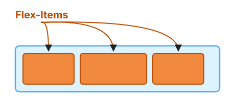
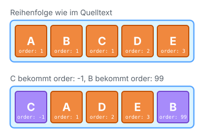
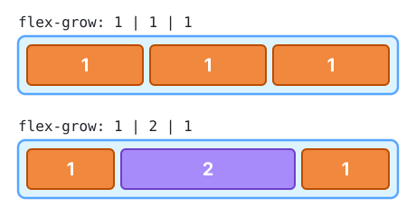
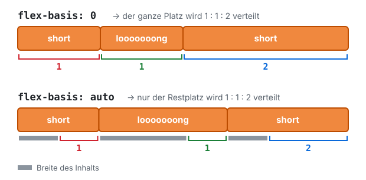
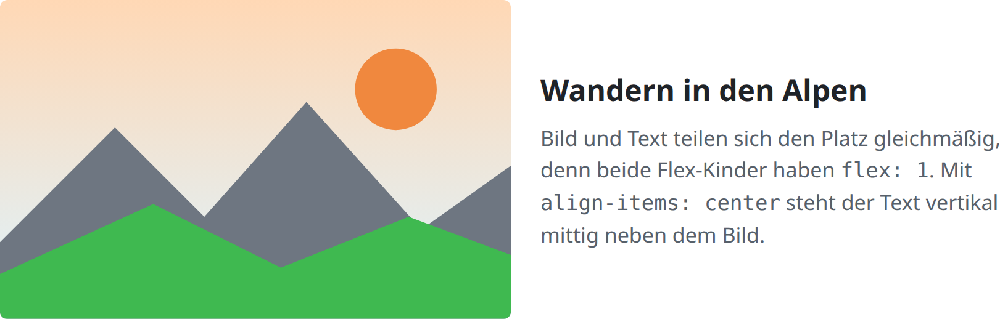
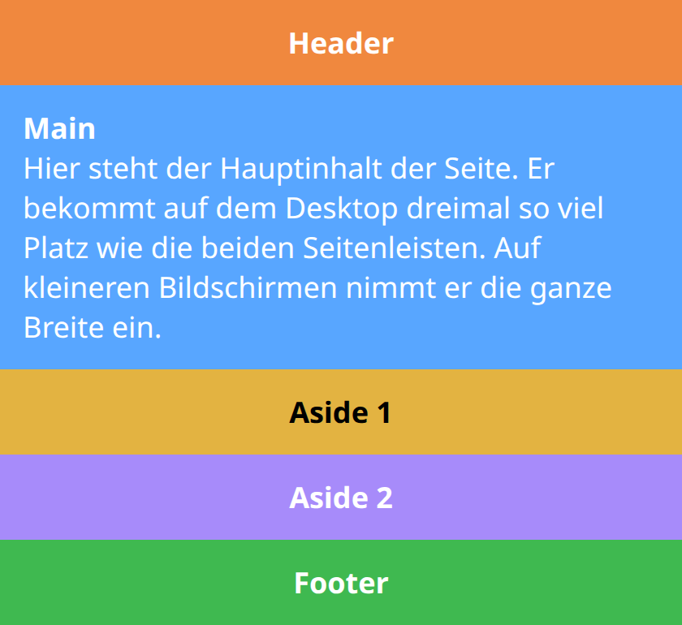
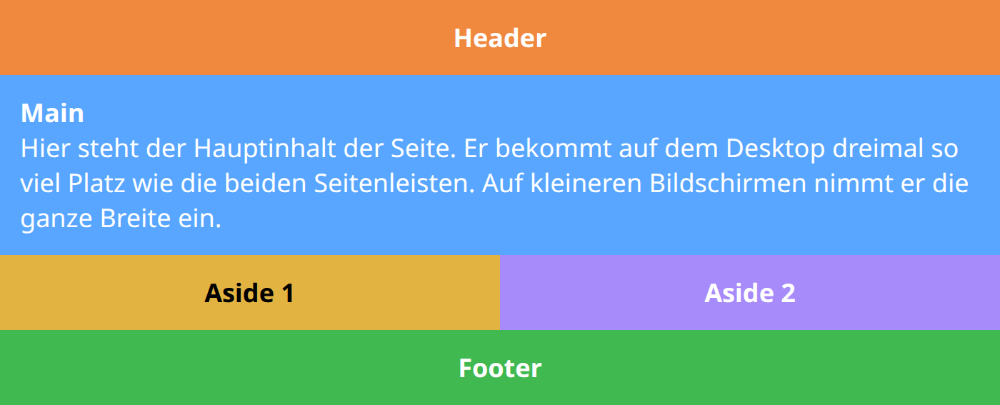
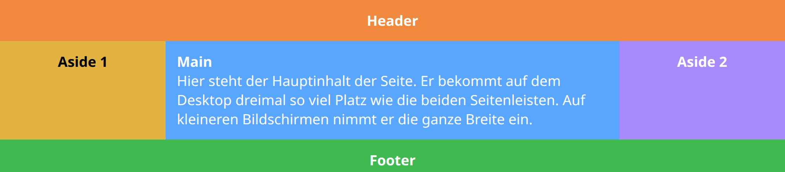

Lektion 2.6 — Teil 2: CSS & Layout
Flexbox: Flex-Kinder & Patterns
Lernziele
- Die Reihenfolge von Flex-Kindern mit
orderändern - Wachsen und Schrumpfen mit
flex-growundflex-shrinksteuern - Die Wunschgröße
flex-basisverstehen – und den Unterschied zwischen0undauto - Die Kurzschreibweise
flexlesen und die typischen Werte kennen - Zwei Praxis-Patterns umsetzen: Text-Bild-Layout mit responsiven Medien und ein mehrzeiliges Mobile-First-Layout
1 — Flex-Kinder

Während die Properties aus Lektion 2.5 auf den Container gesetzt werden, stehen die folgenden Properties auf den einzelnen Kindern. Damit kann man jedes Kind individuell steuern.
2 — order
div {
order: number;
}
Standardmäßig werden die Flex-Elemente in der Reihenfolge des DOM-Baums angeordnet (alle haben order: 0).
order steuert die Reihenfolge, in der sie im Flex-Container erscheinen. Kleinere Werte kommen zuerst.
order ändert nur die Darstellung. Screenreader und die Tab-Taste folgen
weiterhin der Reihenfolge im HTML. Wichtige Inhalte sollten deshalb auch im HTML in einer
sinnvollen Reihenfolge stehen.
3 — flex-grow
div {
flex-grow: number;
}
flex-grow (default 0) definiert die Fähigkeit eines Flex-Kindes, bei Bedarf zu wachsen.
- Sind alle Flex-Kinder auf
1eingestellt, wird der verbleibende Platz im Container gleichmäßig auf alle Kinder verteilt. - Ist ein Flex-Kind auf
2und die anderen auf1eingestellt, bekommt dieses Kind doppelt so viel vom verbleibenden Platz wie jedes der anderen.
4 — flex-shrink
div {
flex-shrink: number;
}
flex-shrink (default 1) definiert die Fähigkeit eines Flex-Kindes,
bei Bedarf zu schrumpfen – also wenn der Platz im Container nicht für
alle reicht. Mit flex-shrink: 0 schrumpft ein Kind gar nicht.
5 — flex-basis
div {
flex-basis: px | % | auto;
}
flex-basis ist die Wunschgröße eines Elements,
bevor der verbleibende Platz verteilt wird. Es kann eine Länge
(z. B. 100%, 0px) oder auto sein.
| Wert | Bedeutung | Sinnvoll mit |
|---|---|---|
flex-basis: auto (default) | „Ich möchte so groß wie mein Inhalt sein.“ | – |
flex-basis: 0px | „Ich möchte 0px groß sein.“ | flex-grow |
flex-basis: 100% | „Ich möchte so breit wie der Container sein.“ | flex-wrap: wrap → siehe Flexbox – Multiline |
flex-basis: 0 vs. flex-basis: auto

flex-basis: 0
Der ganze Flex-Container (ALL SPACE) wird proportional zum flex-grow-Wert auf die Flex-Kinder verteilt. Der Inhalt spielt keine Rolle.
flex-basis: auto
Jedes Kind bekommt zuerst den Platz für seinen Inhalt. Nur der übrige Bereich (EXTRA SPACE) wird proportional zum flex-grow-Wert verteilt.
Zuerst Basis → dann shrink (falls zu wenig Platz) → dann grow (falls Platz übrig).
6 — Flex-Shorthand
In der Praxis schreibt man flex-grow, flex-shrink und flex-basis fast immer zusammen mit der Kurzform flex:
/* Three values: flex-grow & flex-shrink & flex-basis */
flex: 0 0 100%;
/* One value, unitless number: flex-grow */
flex: 1;
/* → entspricht flex: 1 1 0; */Typische Werte – und was sie „sagen“
| Wert | Bedeutung | Hinweis |
|---|---|---|
flex: 0 1 auto (default) |
„I want to be the width of my real content … BUT if necessary I will shrink.“ | Verhindert, dass die Zeile überläuft. |
flex: 1 0 auto |
„I want to be the width of my real content … BUT if possible I will grow.“ | Kann die Zeile überlaufen lassen (DANGEROUS!) |
flex: 1 1 auto |
„I want to be the width of my real content … BUT let’s see if I have to grow or shrink.“ | Flexibel in beide Richtungen. |
flex: 0 0 auto |
„I will be the width of my real content … and nobody touches me!“ | Kann die Zeile überlaufen lassen (DANGEROUS!) |
flex: 1 0 0pxflex: 1 |
„I will start with my absolute minimum size … BUT if possible I will grow.“ | Auf alle Kinder gesetzt, werden alle gleich groß. |
flex: 0 0 100% |
„I will take the entire flex-line for me.“ | Sinnvoll mit flex-wrap: wrap. |
Laut Spezifikation steht flex: 1 für flex: 1 1 0 (mit
flex-shrink: 1). Für das Ergebnis „alle gleich groß“ macht das keinen
Unterschied, denn mit flex-basis: 0 muss ohnehin nichts schrumpfen.
7 — Flexbox mit responsiven Medien
Pattern: Ein Artikel mit Text und Bild nebeneinander, beide gleich breit.

1) Responsive Media
img, video {
max-width: 100%;
height: auto;
/* remove bottom gap from img/video */
vertical-align: bottom;
}2) img/video in ein anderes Tag einpacken
<div><img src=""></div>img/videohaben einen „intrinsic content“ (eine eigene, natürliche Größe) – als direktes Flex-Kind verhalten sie sich deshalb oft unerwartet. :-(max-width: 100%gehorcht dann seinem „Master“, dem Wrapper-Tag. :-)- Der Wrapper wiederum wird von Flexbox gesteuert.
3) Flex-Container
.intro-article {
display: flex;
flex-direction: row;
align-items: center;
}4) Flex-Kinder
.intro-article__content,
.intro-article__media {
flex: 1;
}8 — Flexbox: Multiline-Layout (Mobile First)
Pattern: Ein komplettes Seitenlayout mit Header, Hauptinhalt, zwei Sidebars und Footer, das sich an die Bildschirmbreite anpasst. Wir beginnen mit dem Layout für Smartphones (Mobile First) und erweitern es für größere Bildschirme.
<div class="wrapper">
<header class="header">Header</header>
<article class="main">...</article>
<aside class="aside aside-1">Aside 1</aside>
<aside class="aside aside-2">Aside 2</aside>
<footer class="footer">Footer</footer>
</div>1) Flex-Container
.wrapper {
display: flex;
flex-direction: row;
flex-wrap: wrap;
}2) Flex-Kinder – Mobile First
/* Jedes Kind nimmt die ganze Zeile ein → alles untereinander */
.wrapper > * {
flex: 0 0 100%;
}
3) Flex-Kinder – Tablet
@media all and (min-width: 600px) {
/* Die beiden Asides teilen sich eine Zeile */
.aside { flex: 1 0 0; }
}
4) Flex-Kinder – Desktop
@media all and (min-width: 800px) {
.main { flex: 3 0 0; }
.header { order: 1; }
.aside-1 { order: 2; }
.main { order: 3; }
.aside-2 { order: 4; }
.footer { order: 5; }
}
Die Regeln in @media all and (min-width: 600px) { … } gelten nur, wenn das
Browserfenster mindestens 600px breit ist. Media Queries behandeln wir ausführlich in
Lektion 2.8.
9 — Flexbox: Summary
Flex-Container
display: flex | inline-flex;
flex-direction: row (default) | column | row-reverse | column-reverse;
flex-wrap: nowrap (default) | wrap | wrap-reverse;
flex-flow: row nowrap (default); /* Shorthand for flex-direction & flex-wrap */
justify-content: flex-start (default) | center | flex-end | space-around | space-between | space-evenly;
align-items: flex-start | center | flex-end | stretch (default) | baseline;
align-content: flex-start (default) | center | flex-end | stretch;
gap: 10px;Flex-Kinder
order: number;
flex-grow: number;
flex-shrink: number;
flex-basis: auto | px | %;
flex: 0 1 auto (default); /* Shorthand for flex-grow & flex-shrink & flex-basis */Projektschritt
Text/Bild-Layout & Karten
Jetzt steuern wir die Flex-Kinder: Text und Bild im HTML-Abschnitt teilen sich den Platz 2 : 1, die CSS-Karten brechen automatisch um, und mit order: -1 steht das Bild oben, obwohl es im HTML zuletzt kommt.
/* ---- 2.6 Flexbox: Flex-Kinder & Patterns ------------------- */
/* Text und Bild nebeneinander: Text bekommt doppelt so viel Platz */
.content-with-image {
display: flex;
align-items: center;
gap: 2rem;
}
.text-content {
flex: 2;
}
.content-with-image img {
flex: 1;
min-width: 0;
max-width: 200px;
}
/* Karten in Reihen, die automatisch umbrechen */
.cards {
display: flex;
flex-wrap: wrap;
gap: 1.5rem;
}
.card {
flex: 1 1 250px;
display: flex;
flex-direction: column;
overflow: hidden;
border-radius: 10px;
background: white;
}
.card img {
order: -1; /* Bild nach oben, obwohl es im HTML zuletzt steht */
height: 150px;
object-fit: cover;
}
.card h3,
.card p {
margin: 1rem 1rem 0;
}📁 Stand nach dieser Lektion: beispiele/2.6/
Häufige Fehler
Mit flex-grow: 1 allein sind Spalten mit mehr Text breiter.
flex: 1 verwenden – das setzt zusätzlich flex-basis: 0, sodass der Inhalt keine Rolle spielt.
Ein großes Bild als direktes Flex-Kind schrumpft nicht und drückt den Text weg.
Bild in einen Wrapper packen, dem Wrapper flex: 1 geben und dem Bild max-width: 100%.
Mit flex: 0 0 auto oder flex: 1 0 auto läuft die Zeile auf schmalen Bildschirmen über.
Schrumpfen erlauben (flex-shrink: 1) oder flex-wrap: wrap setzen.
Aufgaben
Ein Container ist 900px breit. Drei Kinder haben flex: 1, flex: 2 und flex: 3. Wie breit wird jedes Kind? Was ändert sich, wenn ein Kind zusätzlich flex-basis: 300px hat?
Baue das Multiline-Layout aus Abschnitt 8 nach und teste es in den Entwicklertools mit dem Gerätemodus (Strg+Shift+M) für Mobile, Tablet und Desktop.
Stelle das Newsletter-Formular der Demoseite auf eine Zeile um: Die beiden Eingabefelder teilen sich den freien Platz (flex: 1), der Button behält seine Größe (flex: 0 0 auto).
Sorge dafür, dass der Footer auch bei wenig Inhalt immer ganz unten im Fenster steht: body als Flex-Container mit flex-direction: column; min-height: 100vh; – welches Kind braucht flex: 1?